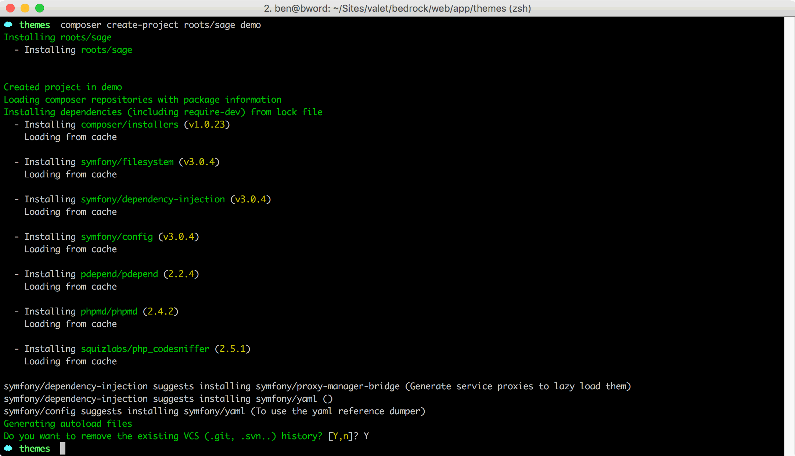
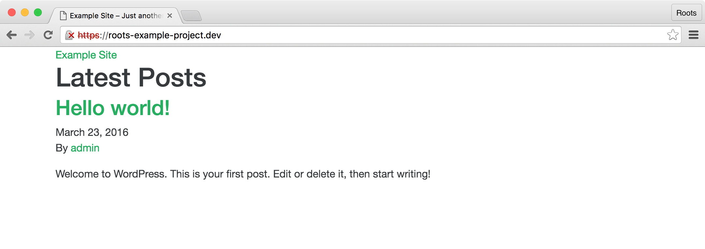

Installing the Sage starter theme
Install Sage using Composer from your WordPress themes directory (replace your-theme-name below with the name of your theme):
# From the app/themes/ or wp-content/themes/ directory in your WordPress install
$ composer create-project roots/sage your-theme-name

You'll want to confirm Yes when asked about removing the existing git history. Afterwards, you'll be prompted to update values for the theme headers in style.css:
- Theme name
- Theme URI
- Theme description
- Theme version
- Theme author and URI
Afterwards you'll be asked for the URL of your local development site, such as https://example.test and the path to your theme directory. These values must be correct in order for the build system to properly function.
The last part of the install will ask about front-end options. After choosing a framework or selecting none, you can also select whether or not to include Font Awesome. Once your choices are made you'll confirm overwriting files from Sage to respect your selections.
Installing Sage without Composer
You can also clone the Git repository or download a ZIP of the latest Sage release.
If you choose to install Sage without Composer, make sure to run composer install after getting the project files onto your machine. This will make sure that the Composer autoload files are generated and saved to the vendor/ directory.
Theme activation
After updating the theme meta information, go ahead and activate your theme from the WordPress admin.
At this point your theme won't have any stylesheets or JavaScript available since the build process has yet to run.
Theme structure
themes/your-theme-name/ # → Root of your Sage based theme
├── app/ # → Theme PHP
│ ├── controllers/ # → Controller files
│ ├── admin.php # → Theme customizer setup
│ ├── filters.php # → Theme filters
│ ├── helpers.php # → Helper functions
│ └── setup.php # → Theme setup
├── composer.json # → Autoloading for `app/` files
├── composer.lock # → Composer lock file (never edit)
├── dist/ # → Built theme assets (never edit)
├── node_modules/ # → Node.js packages (never edit)
├── package.json # → Node.js dependencies and scripts
├── resources/ # → Theme assets and templates
│ ├── assets/ # → Front-end assets
│ │ ├── config.json # → Settings for compiled assets
│ │ ├── build/ # → Webpack and ESLint config
│ │ ├── fonts/ # → Theme fonts
│ │ ├── images/ # → Theme images
│ │ ├── scripts/ # → Theme JS
│ │ └── styles/ # → Theme stylesheets
│ ├── functions.php # → Composer autoloader, theme includes
│ ├── index.php # → Never manually edit
│ ├── screenshot.png # → Theme screenshot for WP admin
│ ├── style.css # → Theme meta information
│ └── views/ # → Theme templates
│ ├── layouts/ # → Base templates
│ └── partials/ # → Partial templates
└── vendor/ # → Composer packages (never edit)
You'll primarily be working within the following directories:
app/— Theme functionalityresources/assets/— Theme stylesheets, JS, images, fontsresources/views/— Theme templates
Note that functions.php, index.php, screenshot.png and style.css exist in the resources/ directory and not the theme root. This does currently come with some tradeoffs. sage-installer Issue #3 is tracking an option to move the required theme files back to the theme root folder. You'll need to follow the instructions from dmgawel if allowing your theme to be uploaded via zip to the WordPress admin is a requirement.
Installing dependencies
Sage uses a modern front-end development workflow that requires Node.js and several dependencies that live on the npm registry. If you open package.json you'll see both devDependencies and dependencies that Sage uses. devDependencies are used by the build process, whereas dependencies are packages that are used in the front-end theme assets.
devDependencies includes projects such as Webpack, Browsersync, Autoprefixer, imagemin, node-sass, and more.
dependencies includes the front-end options you selected during install, such as Bootstrap and Font Awesome:
"dependencies": {
"bootstrap": "^4.0.0-beta",
"font-awesome": "~4.7",
"jquery": "1.12.4 - 3",
"popper.js": "~1.11"
}
Before you touch any stylesheets, JavaScript, images, or fonts, you’ll need to install the required dependencies. On your host machine (not on your development VM), run:
# @ themes/your-theme-name/
$ npm install -g yarn
Yarn is a npm client replacement that has significant performance improvements over a typical npm install. After installing Yarn globally, run yarn from your terminal:
# @ themes/your-theme-name/
$ yarn
[1/5] 🔍 Validating package.json...
[2/5] 🔍 Resolving packages...
[3/5] 🚚 Fetching packages...
[4/5] 🔗 Linking dependencies...
[5/5] 📃 Building fresh packages...
✨ Done in 22.47s.
Run into any warnings? You can safely ignore them.
Run into any errors? See the theme troubleshooting chapter & our npm Debugging Guidelines for support.
You now have all the necessary dependencies to run the build process. The node_modules directory in the theme is around 100mb at this point 😱. Dependencies take up space, and dependencies have their dependencies, then their dependencies have dependencies, and so forth.
The node_modules directory doesn't need to exist on your remote server, so if you happen to still be using FTP, then you should exclude it.
If you end up compiling assets on the server, make sure to run yarn on the server during the deploy. Deploying the theme is covered further in chapter 9.
node_modules is excluded from your Git repo from the .gitignore by default as it should be used in a read-only manner.
Available build commands
yarn build— Compile and optimize the files in your assets directoryyarn start— Compile assets when file changes are made, start Browsersync sessionyarn build:production— Compile assets for production
At this point, you don’t have a dist/ directory in your theme folder. Running yarn build will compile and optimize the files in the resources/assets/ directory for the first time:
# @ themes/your-theme-name/
$ yarn build
Asset Size Chunks Chunk Names
scripts/main.js 205 kB 0 [emitted] main
vendor/fontawesome-webfont_674f50d2.eot 166 kB [emitted]
vendor/fontawesome-webfont_fee66e71.woff 98 kB [emitted]
vendor/fontawesome-webfont_b06871f2.ttf 166 kB [emitted]
vendor/fontawesome-webfont_912ec66d.svg 444 kB [emitted] [big]
vendor/fontawesome-webfont_af7ae505.woff2 77.2 kB [emitted]
scripts/customizer.js 3.24 kB 1 [emitted] customizer
styles/main.css 268 kB 0 [emitted] [big] main
scripts/main.js.map 332 kB 0 [emitted] main
styles/main.css.map 1.49 MB 0 [emitted] main
scripts/customizer.js.map 3.07 kB 1 [emitted] customizer
✨ Done in 3.57s.
Once completed, Webpack will have created a dist/ directory with all of the compiled assets. Don’t ever edit the contents of the dist/ directory, always make sure to edit the source inside the resources/assets/ directory. Run yarn build again to compile the assets to the dist/ directory.
Now that the initial front-end assets are built, visit your WordPress site to take a look at your starting point.

Even though Bootstrap is included as an installation option with Sage, the theme is setup in a way where you basically have a blank slate. Components such as the Bootstrap navbar aren't included in Sage out of the box as we like to encourage you to think outside of the box.